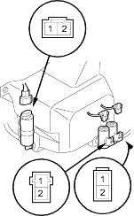
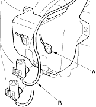
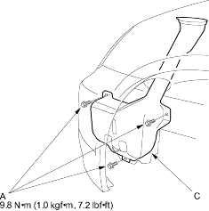

- Remove the left inner fender (see page 20-121).
- Disconnect the 2P connector (A) from the washer motor (B).
Headlight

| Windshield: | Rear |
- Test the motor by connecting battery power to the No. 1 terminal and ground the No. 2 terminal of the washer motor. The motor should run.
- If the motor does not run or fails to run smoothly, replace it.
- If the motor runs smoothly, but little or no washer fluid is pumped, check for a disconnected or blocked washer hose, or a clogged pump outlet in the motor.
- Remove the left inner fender (see page 20-121).
- Disconnect the 2P connector(s) (A) and washer tube (B).

- Remove the three bolts and washer reservoir.

- Install the reservoir in the reverse order of removal. Check the washer motor operation.